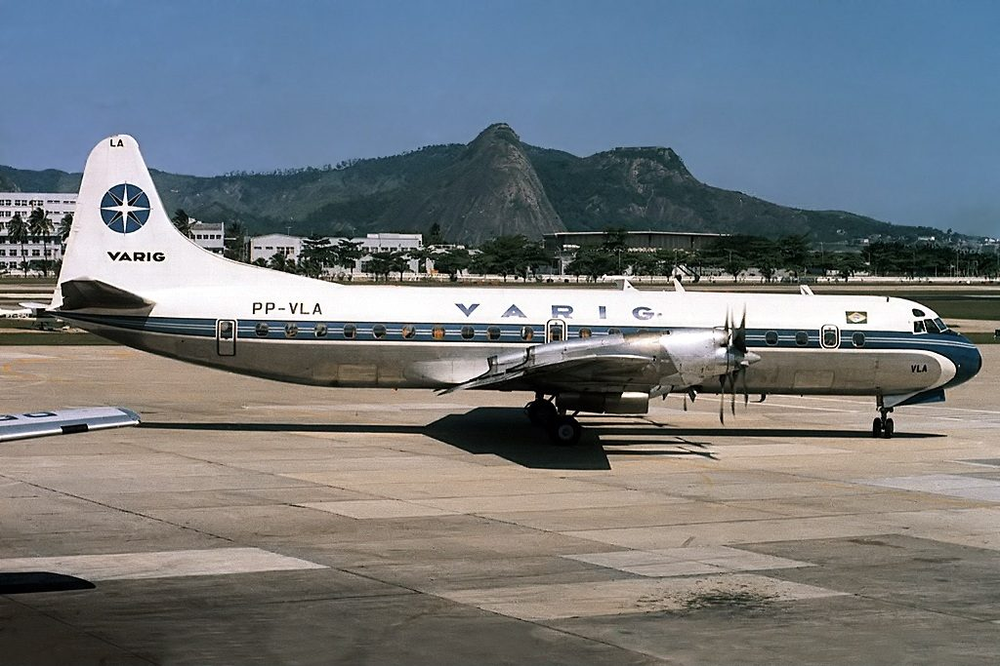
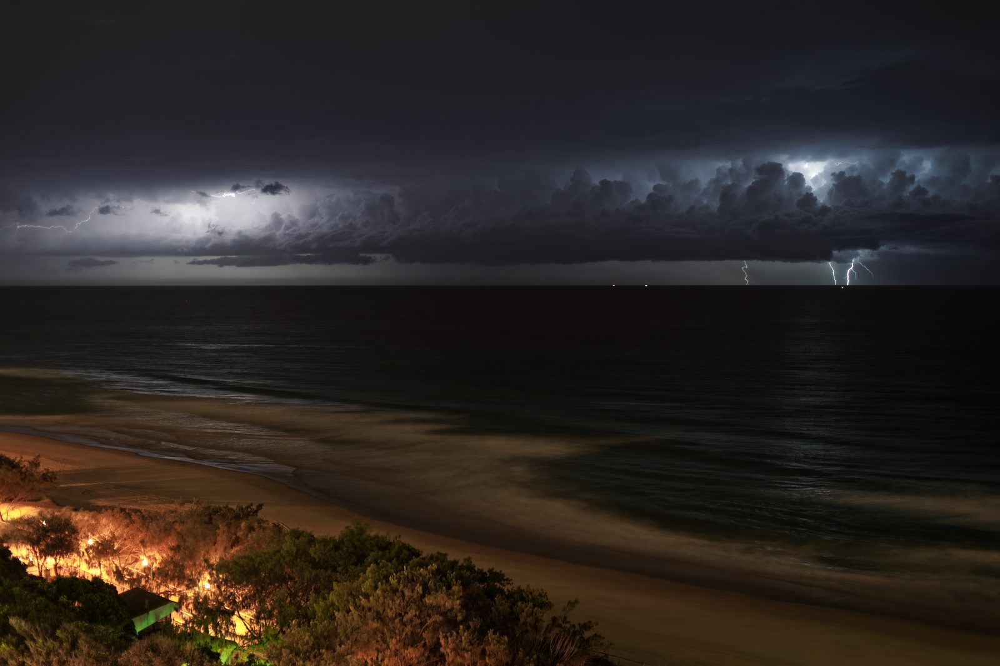
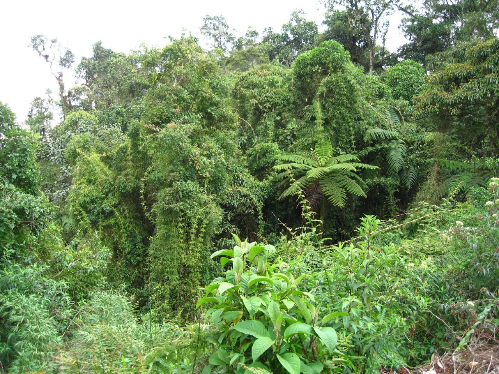
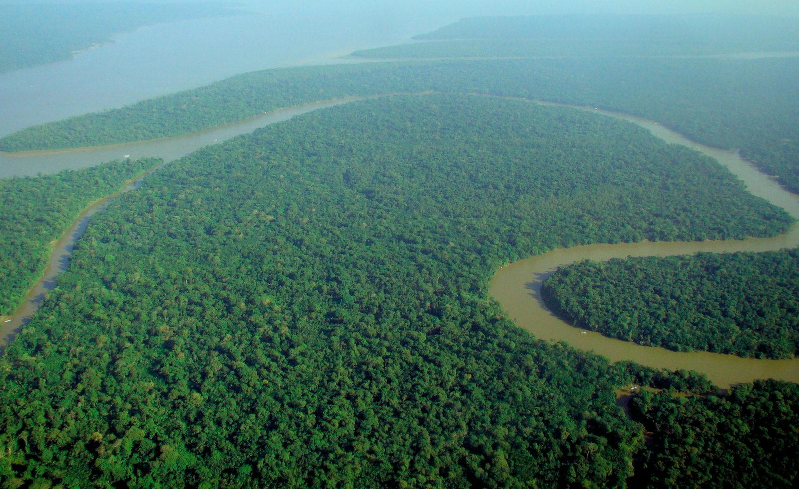

On Christmas Eve 1971, lightning tore a Lockheed Electra apart four miles above the Peruvian rainforest. Ninety-one people died, including the mother seated beside her. Seventeen-year-old Juliane Koepcke fell nearly two miles still strapped to her row of seats, and survived, then walked out of the jungle alone, eleven days later. This is the full, source-verified account.
Juliane Koepcke and her mother were flying home for the holiday. Neither of them made it.

Juliane Koepcke was seventeen, just out of high school in Lima, flying with her mother, Maria, to spend Christmas with her father at Panguana, the biological research station he ran deep in the Peruvian Amazon. Every seat on every other flight to the region was booked for the holiday. The only ticket left was on LANSA (Líneas Aéreas Nacionales S.A.), a domestic carrier that had already lost one aircraft the year before, when Flight 502 crashed on takeoff from Cusco in August 1970, killing 99 people, 49 of them American exchange students. LANSA had been grounded for ninety days after that crash and was flying again on a single remaining airworthy Lockheed Electra by the time Juliane and her mother boarded.
Flight 508 left Lima's Jorge Chávez Airport for Pucallpa, with a continuation on to Iquitos, carrying 92 people: 86 passengers and 6 crew. Juliane had the window seat; her mother sat beside her. About forty minutes in, the Electra flew into the kind of severe tropical storm that, over the Amazon, can turn an ordinary domestic hop into something else entirely.
Cruising at roughly 21,000 feet, the aircraft entered an area of intense thunderstorms and turbulence. Passengers' hand luggage began flying out of the overhead racks. Christmas presents people had been carrying rolled into the aisles. Outside the windows, according to Juliane's own later account, the sky had turned a strange, dark black. “Black Christmas,” her mother is said to have murmured, a nickname Peruvians already used for this time of year in the jungle's rainy season. Then lightning struck the aircraft's right wing.
Investigators later concluded the strike, combined with the extreme aerodynamic loads of flying through the storm and a subsequent maneuver to try to level the aircraft, caused catastrophic structural failure: the right wing sheared away, followed by part of the left. The Electra's official Peruvian accident investigation pointed to a harder truth as well, evidence that the crew had continued into hazardous weather they could likely see coming, quite possibly because of pressure to keep to the busy pre-Christmas flight schedule. At around 12:45pm local time, roughly fifteen minutes before it was due to land at Pucallpa, LANSA Flight 508 broke apart in mid-air.
That is the end, it's all over.
— Maria Koepcke, Juliane's mother, her last words, as Juliane recalled them to the BBC in 2012Juliane remembers her mother's hand, the roar, and then the airplane (no longer an airplane) beginning to fall. She was still buckled into her row of three seats when it detached from the disintegrating fuselage and dropped, alone, into the storm.
Nobody has ever fully explained how Juliane Koepcke survived what came next. The honest answer is that several unlikely things happened to her at once.

Still strapped into her row, Juliane fell roughly 3,000 meters (about 10,000 feet, close to two miles), spinning through open air inside a severe thunderstorm, in the dark. She remembers the row of seats spinning “like a helicopter” on the way down, and then nothing. She lost consciousness during the descent and has no memory of the impact itself.
Investigators and researchers who have studied the case since generally point to a combination of factors, none proven, all plausible together: the row of seats may have auto-rotated like a falling maple seed or a broken helicopter rotor, slowing her terminal velocity rather than letting her fall in a simple straight line; the same violent thunderstorm updrafts that helped destroy the aircraft may have also buoyed her fall in places; and the dense, layered canopy of the rainforest below (closer to a cushion than open ground) absorbed a final blow that concrete or open field never would have.
None of that made the landing survivable in any way that felt survivable. She woke up roughly an hour later, alone, still strapped into the seats, on the floor of the jungle.
She surfaced into consciousness under the canopy, badly hurt, completely alone, with no idea yet that she was the only one who would.
Juliane came to on the rainforest floor, the row of three seats still around her, rain still falling through the canopy above. She had a broken collarbone, a deep, open laceration on her right arm, a torn ligament in her left knee, a concussion, and one eye swollen shut. She had lost one of her sandals in the fall and was wearing only the mini dress she'd had on for the flight. She could not stand properly for the first day; she could barely see out of one eye.
She called out for her mother. Nobody answered. She searched the small patch of jungle around the point of impact and found almost nothing useful, no other survivors, no supplies, no sign of her mother, no clear wreckage trail. What she did find was a small bag of hard candy that had survived the fall along with her. For the first several days in the jungle, it was the only food she had.

It turned out to be enough.
Juliane had no survival training and no equipment. What she had was a German zoologist for a father, and one piece of advice he'd given her years before she ever needed it.

Juliane had grown up partly at Panguana, the research station her parents ran, and both of them (her father Hans-Wilhelm, a zoologist, and her mother Maria, an ornithologist) had spent years teaching her the practical rules of the rainforest most people never learn: how to move through it, what not to touch, and, most critically, what to do if she was ever badly lost. Her father's rule was simple. Find moving water and follow it downstream. Eventually, without fail, it leads to people.
She found a small stream near the crash site and started walking, wading through it when she could to avoid the worst of the undergrowth and whatever was living in it. The stream joined a larger creek, and the creek eventually widened into a river. She kept the candy rationed, sucking on one at a time, and drank from the water she was following. Her knee injury and the growing infection in her arm made walking slow and painful; leeches, biting insects and the tropical heat worked on her constantly. She saw only wildlife, birds, insects, once a group of vultures she deliberately avoided approaching, afraid of what they might be circling.
The open wound on her arm, meanwhile, had become infested with fly larvae, botfly maggots, laid in the cut during the days she'd spent walking through humid jungle with no way to clean or dress it. She could feel them moving under the skin. This is the detail every telling of her story eventually arrives at, because it's real, and because what she did about it is the clearest single example of her father's training keeping her alive.
On the ninth day, the river finally led her somewhere. Nobody was home.
Juliane came upon a small camp, a simple shelter used by loggers or fishermen, with a boat pulled up nearby and a metal drum of gasoline beside it. Nobody was there. She considered taking the boat downriver herself, and decided against it: it wasn't hers, and taking it from people who depended on it for their livelihood felt wrong even in her condition. Instead, she did something her father had once shown her when treating an infected animal at Panguana: she poured gasoline directly into the wound on her arm.
The maggots, unable to breathe under the fuel, began working their way out. She picked them out one at a time, by hand, counting as she went, by her own account roughly 30 of them, in agony, working entirely alone with a knife she'd found at the camp and no anesthetic of any kind. Doctors who treated her afterward found the true number closer to 50, packed into a wound she later said was no larger than a one-euro coin.
Every rule held.
I remember having seen my father when he cured a dog of worms in the jungle with gasoline. I got some gasoline and poured it on myself. I counted the worms when they started to slip out. There were 35 on my arm.
— Juliane Koepcke, interviewed days after her rescue, The News and Courier, January 9, 1972She spent that night alone in the empty shelter, sheltered from the rain for the first time in nine days, and waited.
The following day, three men walked into the shelter and found a badly injured, filthy, sunburned teenage girl waiting for them. They had no idea who she was.
The camp belonged to a small group of Peruvian loggers, who arrived the next day to find Juliane inside. She was able to tell them, in Spanish, that she was a survivor of the LANSA crash that had been in the news for over a week, by then, search efforts for the missing aircraft had been widely reported, and her account matched what the men had already heard. They treated her wounds as best they could, let her rest through a second night at the camp, and the following morning began the journey out: roughly seven hours by canoe downriver to the small town of Tournavista.
From Tournavista, Juliane was flown onward toward Pucallpa and the nearby settlement of Yarinacocha, where missionary and medical aid organizations operated a base, and from there to a hospital. She was reunited with her father, who had spent eleven days not knowing whether his wife and daughter were alive, dead, or somewhere in between. Word reached international media within days: the sole survivor of one of the deadliest air disasters in Peruvian history had walked out of the jungle alive, on her own, eleven days after the crash. She was found on 3 January 1972.
I was in a state of emotional and physical shock, but I was so happy to see people again that all the pain and the fear of the last eleven days just fell away.
— Juliane Koepcke, recalling the moment the loggers found herNinety-one people did not survive LANSA Flight 508. Juliane's mother, Maria, was one of as many as fourteen passengers who investigators later determined had survived the initial break-up of the aircraft, only to die in the days that followed, waiting for a rescue that came too late.
Maria Koepcke was not simply “a passenger.” She was one of the most respected ornithologists working in South America at a time when the field was almost entirely male, holder of a doctorate in zoology from Kiel University since 1949, and co-founder with her husband of the Panguana research station. Four Peruvian bird species carry her name today, among them a hummingbird, Koepcke's Hermit, found nowhere else on Earth. She was 47 years old.
Her body was recovered from the crash site on 12 January 1972, more than a week after Juliane herself had already reached safety, and more than two weeks after the crash. Juliane did not know, in the moment, that her mother had likely survived the fall at all; that fact only became clear later, through the accident investigation and, decades afterward, through further research connected to the making of a documentary about her own survival. She has said publicly that learning her mother lived through the initial impact, only to die alone awaiting help that never came, was in some ways harder to carry than believing she had died instantly.
Koepcke's Hermit still carries her name.
Juliane later helped investigators locate parts of the crash site and identify remains, drawing on her own memory of the descent and the terrain she'd walked through. The scale of the loss (91 dead, including all six crew and 84 of the other 85 passengers) made Flight 508 one of the deadliest single-aircraft disasters in Peruvian aviation history. Days after Juliane's rescue, on 4 January 1972, the Peruvian government formally revoked LANSA's operating license. The airline, which had already lost its last airworthy aircraft in the crash, never flew again.
Juliane Koepcke did not spend the rest of her life running from the Amazon. She became a scientist, went back to it, and (through a coincidence almost as strange as her survival) ended up the subject of a Werner Herzog documentary about the exact thing that nearly killed her.
Following her parents into biology, Juliane studied at the University of Kiel and later earned her doctorate at Ludwig Maximilian University of Munich, specializing in bats. In 1989 she married Erich Diller, an entomologist, and took the surname Diller professionally while remaining publicly known by her birth name. She spent years as deputy director at the Bavarian State Collection of Zoology in Munich before retiring in 2021, not, as sometimes reported, its overall director, though she held senior roles there for decades. After her father's death in 2000, she took over directorship of Panguana itself, the research station where she'd been headed the day her plane went down, and has continued expanding it as a protected reserve and functioning field station ever since.
In 2011 she published a memoir, When I Fell From the Sky, her own account of the crash, the eleven days, and the decades of processing what happened to her, including nightmares that persisted for years and a question she has said never fully leaves her: why she was the one who lived.
He found her through the priest who buried her mother.
Herzog's connection to the case is one of the more extraordinary, well-documented footnotes in aviation history: he had planned to be on LANSA Flight 508 himself, scouting Peruvian jungle locations for his own film, and only avoided it because of an unrelated, last-minute change of plans. Decades later, wanting to tell Juliane's story, he tracked her down through the same Catholic priest who had performed her mother's funeral service. Koepcke has described accompanying Herzog back to the crash site for the documentary (visiting the place that killed almost everyone she was flying with, for the first time since she'd walked away from it) as, in her own words, “a kind of therapy.” She still works with and for the Amazon today, decades after the jungle her father taught her to survive in was the last thing anyone expected to save her life.
Every fact in this case file was cross-referenced against at least two independent sources, anchored by aviation-accident records and Juliane Koepcke's own public accounts. Her memoir, When I Fell From The Sky, is referenced but not reproduced here. All links open in a new tab.
Independent accident-database entry recording the aircraft type, registration, occupant counts and official cause.
Crash narrative, investigation findings, casualty figures and the Werner Herzog connection, used as a secondary cross-check.
Biographical details, injuries, the eleven-day survival account, her mother's fate, and her later career.
Juliane Koepcke's own recorded account, including her mother's last words and the maggot-wound treatment, marking the fortieth anniversary of the crash.
Background on Juliane's mother's career as an ornithologist and the bird species named in her honor.
Independent fact-check confirming the core survival story, while flagging that a commonly circulated “photo” of Koepcke is actually a still of an actress from a 1974 dramatization, not Koepcke herself.
Background on LANSA's prior 1970 crash, its licensing history, and the operating certificate revoked days after Flight 508.
Referenced for context on Werner Herzog's film and his own cancelled booking on Flight 508, not reproduced or streamed here.